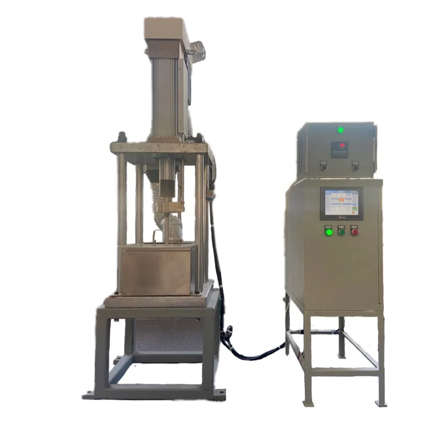
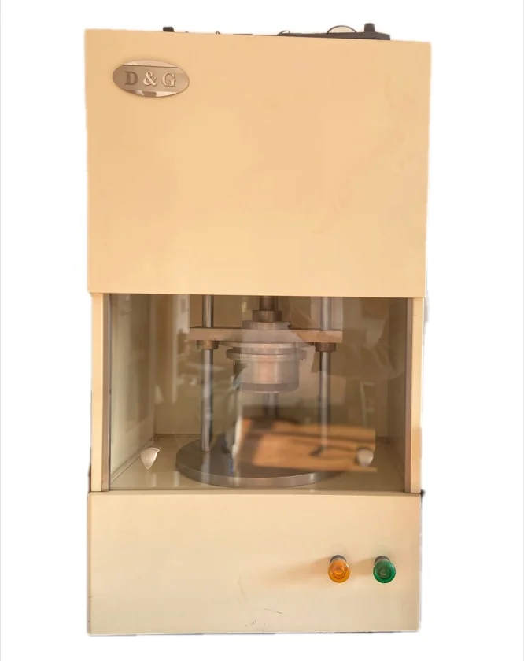
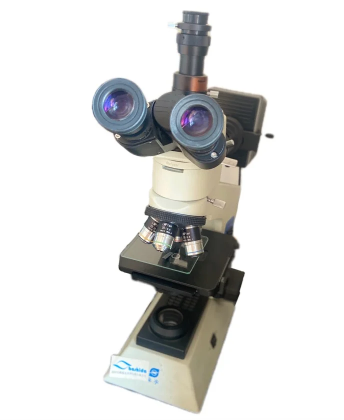
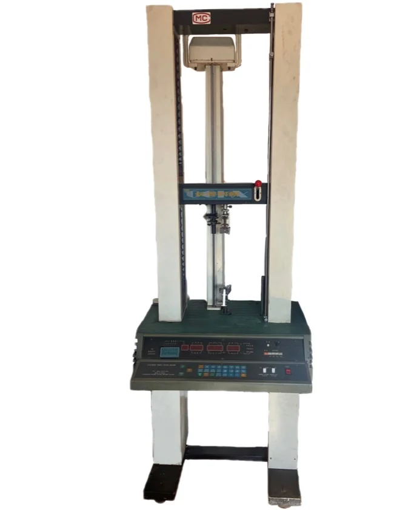
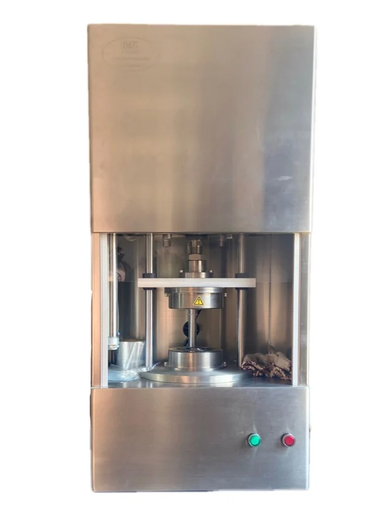

Βιομηχανική στεγανοποίηση από καουτσούκ και φθοροπλαστικό, Κυψέλες ηλεκτρολυτών και προϊόντα στεγανοποίησης.
Τεχνολογία και ποιότητα
Συστήματα ποιότητας και αρχεία ελέγχου για κάθε παρτίδα.Επισκευή κυψελών ηλεκτρόλυσης και αναβάθμιση διακένου μεμβράνης
Επισκευή κυψελών ηλεκτρόλυσης και αναβάθμιση διακένου μεμβράνης
Η Metatecno υποστηρίζει μονάδες χλωροαλκαλίων με επιθεώρηση, επισκευή, αποκατάσταση επιφανειών στεγανοποίησης και αναβάθμιση διακένου μεμβράνης. Το αντικείμενο καθορίζεται από φωτογραφίες, σχέδια, ιστορικό λειτουργίας, μέσο και συνθήκες εργασίας.
Εξοπλισμός δοκιμών ποιότητας 2

Εξοπλισμός δοκιμών ποιότητας 3

Εξοπλισμός δοκιμών ποιότητας 4

Εξοπλισμός δοκιμών ποιότητας 5
Προφίλ εταιρείας
Εστίαση σε κυψέλες ηλεκτρολυτών, στεγανοποιήσεις ηλεκτρολυτών και σύνθετα μέρη καουτσούκ-πλαστικού.
Τεχνική κουλτούρα
Μηχανική υποστήριξη από σχέδιο έως σταθερή παραγωγή.
Πιστοποιήσεις
Συστήματα ποιότητας και αρχεία ελέγχου για κάθε παρτίδα.
Δίκτυο υπηρεσιών
Προμήθεια πολλών σημείων για προϊόντα υψηλής ζήτησης.
Φθοροπλαστικά προϊόντα
Φθοροπλαστικά προϊόντα τεχνολογία επεξεργασίας
Τεχνικές σημειώσεις για προϊόντα στεγανοποίησης PTFE, PFA, FEP/F46 και PVDF, από μορφοποίηση και έλαση έως έγχυση, επένδυση και φινίρισμα.Συμπιεστική μορφοποίηση φθοροπλαστικών
Η συμπιεστική μορφοποίηση φθοροπλαστικών παράγει πλάκες, ράβδους, δακτυλίους, ταινίες, στεγανοποιητικά, διαφράγματα και τεμάχια με μεταλλικά ένθετα. Η διαδικασία περιλαμβάνει προμορφοποίηση, σύντηξη και ψύξη. Η σκόνη PTFE τοποθετείται ομοιόμορφα στο καλούπι και πιέζεται σε θερμοκρασία δωματίου σε πυκνό πρόπλασμα· έπειτα θερμαίνεται πάνω από το σημείο τήξης και ψύχεται. Ορισμένα φθοροπλαστικά πιέζονται σε θερμό καλούπι, ενώ το PTFE συνήθως σε ψυχρό. Ο λόγος συμπίεσης είναι 4-6, η συρρίκνωση 2.6-4.5%, η σκόνη 20-500 μικρά, η πίεση 17-35 MPa, χρειάζεται εξαέρωση και πρόπλασμα 100 mm κρατείται περίπου 15 λεπτά.
Σύντηξη και ψύξη
Στη σύντηξη η άνοδος θερμοκρασίας ελέγχεται στα 20-120°C ανά ώρα, πιο αργά για μεγάλα τεμάχια. Η ρητίνη αιωρήματος συνήθως συντήκεται στους 370-380°C, η ρητίνη διασποράς στους 360-370°C. Υψηλότερη θερμοκρασία αυξάνει συρρίκνωση και πορώδες, άρα ο χρόνος ελέγχεται. Η ψύξη είναι συνήθως αργή, 15-25°C ανά ώρα. Γρήγορη ψύξη χρησιμοποιείται μόνο για φύλλα κάτω από 5 mm ή λεπτότοιχους σωλήνες. Ορισμένα προϊόντα ανοπτούνται στους 100-120°C για 4-6 ώρες.
Έλαση φθοροπλαστικών
Τα διαφράγματα PTFE σχηματίζονται με μονόδρομη ή πολύδρομη έλαση. Μετά την έλαση, το λευκό αδιαφανές φύλλο γίνεται ημιδιαφανές και κρυσταλλικό. Στη μονόδρομη έλαση το ξαναθερμασμένο διαφανές φύλλο περνά γρήγορα από δύο ίδιους κυλίνδρους· λόγος 1.5-2.5 και ταχύτητα περίπου 20 rpm. Στην πολύδρομη έλαση, φύλλο που έχει συντηχθεί και ψυχθεί ελάσσεται σε πολλές κατευθύνσεις για σταδιακή μείωση πάχους. Λόγος 2-2.5, θερμοκρασία κυλίνδρων 150-200°C, πίεση ατμού 0.5-0.9 MPa.
Έγχυση PFA
Το PFA είναι συμπολυμερές τετραφθοροαιθυλενίου και υπερφθοροαλκυλικού βινυλαιθέρα, υλικό τύπου PTFE που επεξεργάζεται ως τήγμα. Η θερμοκρασία επεξεργασίας φθάνει 425°C και η αποσύνθεση είναι πάνω από 450°C, έτσι ο έλεγχος γίνεται στους 330-410°C. Η απορρόφηση υγρασίας είναι περίπου 0.03%, συνήθως δεν χρειάζεται ξήρανση. Τα ένθετα προθερμαίνονται στους 140°C. Ζώνες κυλίνδρου 200-210°C, 300-310°C, 350-410°C· ακροφύσιο λίγο χαμηλότερα· καλούπι 140-230°C· πίεση 40-90 MPa· μέτρια ταχύτητα· σύντομη συγκράτηση· ψύξη 40-150 δευτερόλεπτα.
Δευτερογενής επεξεργασία
Λόγω ιδιοτήτων των φθοροπλαστικών, ορισμένα προϊόντα χρειάζονται δευτερογενή επεξεργασία: κοπή, συγκόλληση, εσωτερική επένδυση και διόγκωση. Η κοπή μοιάζει με κατεργασία μετάλλου και χρησιμοποιεί τόρνο, δράπανο και πλάνη· το πρόπλασμα πρέπει να μείνει 24 ώρες πριν την κοπή. Η συγκόλληση είναι θερμοπρεσαριστή ή με ράβδο θερμού αέρα. Η πρώτη χρειάζεται ειδικό σφιγκτήρα, πάνω από 327°C και πίεση. Η δεύτερη χρησιμοποιεί ράβδους PFA. Επενδύσεις PTFE και FEP προστατεύουν σιδηρούχους σωλήνες από διάβρωση.
Διόγκωση, επένδυση και υλικά
Η διόγκωση εφαρμόζεται σε κυματοειδείς σωλήνες, θερμοσυστελλόμενους σωλήνες και φιλμ, συνεχώς ή περιοδικά. Για σωλήνες F46 μπορεί να χρησιμοποιηθεί υδρόψυκτη διαστασιολόγηση κενού· λόγος έλξης 3-7, κώνος τήγματος 10-20 mm, καλούπι 80-160°C, πίεση 0.1-0.2 MPa, ταχύτητα 80-500 mm/min. Παραδείγματα: μαλακή ταινία οδηγών PTFE, μίγματα με πολυστυρένιο, πολυιμίδιο ή poly-p-hydroxybenzoate, πληρωτικά γραφίτη, δισουλφιδίου μολυβδαινίου και χαλκού, σωληνώσεις PTFE με υαλοΐνες, δακτύλιοι PVDF, φθοριωμένη εποξική ρητίνη, υπερφθοροελαστομερή και γράσα υπερφθοροπολυαιθέρα.
Ηλεκτρολυτικές κυψέλες
Ηλεκτρολυτικές κυψέλες
Η Metatecno κατασκευάζει κυψέλες ηλεκτρόλυσης με ιοντική μεμβράνη και παρέχει επισκευή, επίστρωση, αναβάθμιση διακένου μεμβράνης και αναβάθμιση πλαισίου για εξοπλισμό χλωρίου-αλκαλίων.
Ηλεκτρολυτικές κυψέλες

Ηλεκτρολυτικές κυψέλες